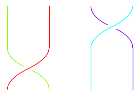
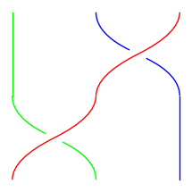
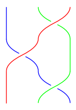

6 Sign of a Permutation
We established in Theorem 4.1 that every permutation can be written as a product of transpositions. But more than that, in all our examples, the number of transpositions required to perform a shuffle was always consistently odd or consistently even. For instance, \((13) = (12)(23)(12)\) has an odd number of transpositions on both sides.
If we look at Section 5.4, we said that every possible way to manipulate a permutation can be reduced to three rules, each of which preserves the parity (odd or even) of the number of transpositions.
In case you were unsatisfied with relying on the fact that every relation reduces to the three given relations, we will present two different proofs that the parity is always consistent: one here, one in the next section.
For a visualization of this proof, see https://www.youtube.com/watch?v=p6kCYbKIMak starting at 13:50.
6.1 Step 1: reducing to the identity
Suppose we have two different ways to write a given permutation as a product of transpositions:
\[ \pi = \tau_1 \tau_2 \dots \tau_m = \tau_1' \tau_2' \dots \tau_n'. \]
(Here the letter \(\tau\) means any transposition, not just for adjacent elements.)
Our goal is to show that \(m\) and \(n\) have the same pairty (both are odd or both are even). Notice that if we multiply both sides by \(\tau_1\), we get
\[ \tau_1 \cdot \tau_1 \tau_2 \dots \tau_m = \tau_1 \cdot \tau_1' \tau_2' \dots \tau_n' \]
but \(\tau_1 \cdot \tau_1\) means swap the same pair twice, and doing this twice is the same as not doing it at all. Therefore the \(\tau_1 \cdot \tau_1\) cancels and we are left with
\[ \tau_2 \dots \tau_m = \tau_1 \cdot \tau_1' \tau_2' \dots \tau_n'. \]
Keep doing this from left to right until we have
\[ 1 = \tau_m \dots \tau_2 \tau_1 \tau_1' \tau_2' \dots \tau_n'. \]
So saying “\(m\) and \(n\) have the same parity” is equivalent to saying “\(1\) cannot be written as an odd number of transpositions.”
6.2 Step 2: setting up the induction hypothesis
Let’s introduce some letters now for our transpositions. Say
\[ 1 = (a_1b_1)(a_2b_2) \cdots (a_kb_k) \tag{6.1}\]
where \(a_i \neq b_i\) for all \(i\) (we’re always swapping two different things).
We know that \(k\) isn’t \(1\) since a single transposition is not the same as the identity. So look now at \(k \ge 2\). We will show that we can always rewrite this product using \(k - 2\) transpositions.
There are a couple ways to phrase this next part of the proof. First, we could say: take as an inductive hypothesis that for all \(k' < k\) if the identity is written as a product of \(k'\) transpositions then \(k'\) is even. In this way, going from \(k\) to \(k' = k - 2\) we know that \(k - 2\) is even and hence so is \(k\).
Another way we could say this: we are always reducing by \(2\) every time so \(k - 2 - 2 - 2 - \dots\) will either end up at \(0\) or \(1\) and we know it can’t end up at \(1\).
6.3 Step 3: reorganizing the product
Look back at Equation 6.1. Since \((ab) = (ba)\), to keep things consistent, we will assume that \(a_i < b_i\) always. Let \(a\) be the smallest number appearing in any transposition. E.g. for \((23)(34)(23)(24)\) we have \(a = 2\).
We will slide all the the transpositions with an \(a\) in them to the right (towards the beginning of the composition). Now we can’t just move things without changing the product so we have to be strategic.
Let’s say we have in the middle of our expression \((uv)(xy)\) where \(u = a\) and \(x \neq a\) and so we want to move \((uv)\) to the right of \((xy)\).
6.3.1 Case 1: disjoint
If \(u, v, x, y\) are all distinct, then the two swaps can be done in either order and \((uv)(xy) = (xy)(uv)\).
6.3.2 Case 2: two numbers in common
If \((uv) = (xy)\) then \((uv)(xy) = (uv)^2 = 1\) and we have reduced the number of transpositions by \(2\) as we said we would.
6.3.3 Case 3: larger number in common
Consider the product \((12)(23) = (123)\) (swap \(2,3\) first then \(1,2\))

Compare this with the identity \((23)(12)(23) = (13)\) that we worked out in Chapter 5:

Multiply both sides on the left by \((23)\) and simplify using \((23)(23) = 1\) to get \((12)(23) = (23)(13)\).
In this way, the smallest number is always moving to the right. The rule is \((uv)(xy) = (xy)(uv')\) where \(v'\) is the number in \((xy)\) which wasn’t in common.
Exercise 6.1 Work out the diagrams to show that \((12)(23) = (23)(13)\). (I would show you in SageMath, but the software doesn’t draw \((13)\) very well.)
6.3.4 Case 4: smaller number in common
Using the previous case, we move all the terms having \(u = a\) to the right. So now we have a bunch of terms \((av_1)(av_2) \dots (av_r)\) in the right of our product. We know we have at least two pairs because if we swap \(a\) out of position, something later on has to swap it back into position.
Also, if any of the adjacent pairs are equal, we can cancel them as in Case 2. Otherwise, we do something similar to Case 3 where
\[ (12)(23)(12) = (13) \implies (12)(23) = (13)(12) \]
by multiplying on the right by \((12)\)
The feature of this identity is that we have one fewer \(1\)’s, or more generally, one fewer \(a\)’s. And we can keep doing this until we are left with either a single \(a\) (impossible) or we eventually find a pair that cancels.
Exercise 6.2 Draw the diagram for this identity.
6.4 Summary
We showed that we can push all the transpositions containing a \(1\) to the right and then moving those transpositions past each other until we had fewer and fewer \(1\)’s and eventuall there must be a pair with both numbers in common because we can’t just move \(1\) a single time in our sequence of transpositions.
Example 6.1 Start with \((12)(23)(12)(13)\). Use Case 3 to swap the first and second: \((23)(13)(12)(13)\). Now use Case 4 to swap the second and third: \((23)(23)(13)(13)\). Now cancel using Case 2.
6.5 Notation/Computation
If \(\pi\) is a permutation, common notations for its parity or sign are: \(\operatorname{sgn} \pi\) and \((-1)^\pi\). We say the sign is \(+1\) if it is an even length product and the sign is \(-1\) if it is an odd length product.
We have the identity \(\operatorname{sgn}(\pi_1 \pi_2) = \operatorname{sgn}\pi_1 \operatorname{sgn} \pi_2\) because, for example, multiplying two odd length products creates an even length product (\((-1) \cdot (-1) = +1\))
One way to compute this is by decomposing \(\pi\) into cycles. We saw in Theorem 4.1 how to write cycles in terms of transpositions: \((12345) = (12)(23)(34)(45)\). The observation here is that odd length cycles become an even length product of transpositions and vice versa.
So the algorithm is:
- Convert the permutation into a product of cycles.
- Write a \(+1\) if the cycle has an odd length and a \(-1\) if it has an even length.
- Multiply those numbers together to find the sign.
Example 6.2 Consider the shuffle \(376819254\). We can write this as \((1369485)(27)\) this is a product of a cycle of length \(7\) and a cycle of length \(2\). Therefore the sign is \((+1)(-1) = -1\).
This computation in SageMath:
π = Permutation([3,7,6,8,1,9,2,5,4])
sign(π)-1